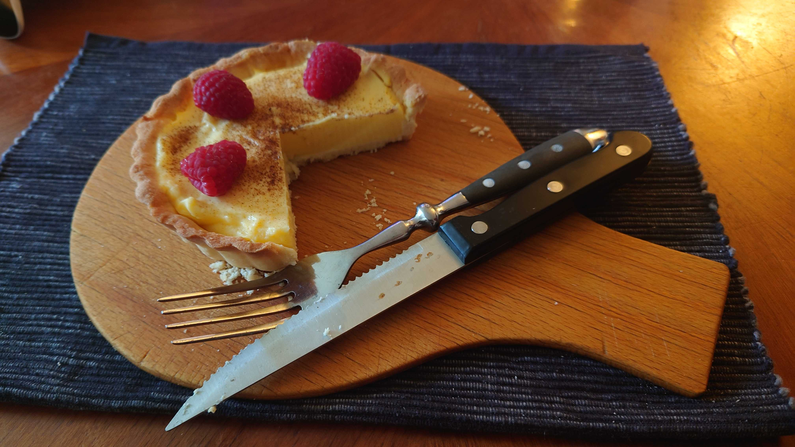

Custard Tarts 🥧

Beschreibung
Diese kleinen Tartes haben einen knusprigen Blaetterteigboden und eine seidige Vanille-Eiercreme. Ob zum Sonntagskaffee oder als Dessert nach dem Essen: Sie sind schnell gemacht und sehen trotzdem beeindruckend aus.
Zutaten 🛒
- 1 Rolle Blaetterteig (Kuehlregal)
- 250 ml Milch
- 120 ml Sahne
- 3 Eigelb
- 60 g Zucker
- 15 g Speisestaerke
- 1 TL Vanilleextrakt
- 1 Prise Salz
- Puderzucker zum Bestaeuben (optional)
Zubereitung 👨🍳
- Vorheizen: Backofen auf 220°C Ober-/Unterhitze vorheizen. Muffinform leicht fetten.
- Teig vorbereiten: Blaetterteig ausrollen, in Kreise schneiden und in die Mulden druecken.
- Creme anruehren: Eigelb, Zucker, Speisestaerke und Salz glatt ruehren.
- Milchmischung: Milch und Sahne erhitzen, nicht kochen. Langsam unter die Eigelbmasse ruehren.
- Andicken: Alles zurueck in den Topf geben und bei mittlerer Hitze ruehren, bis die Creme leicht andickt. Vanille einruehren.
- Fuellen: Creme in die Teigmulden geben, etwa bis knapp unter den Rand.
- Backen: 16 bis 20 Minuten backen, bis die Oberflaechen goldbraun karamellisieren.
- Abkuehlen: Kurz auskuehlen lassen, vorsichtig herausnehmen und nach Wunsch mit Puderzucker bestaeuben.
Tipps & Tricks 💡
- Extra Farbe: Gegen Ende 1 bis 2 Minuten Grillfunktion nutzen, dabei gut beobachten.
- Konsistenz: Creme vor dem Backen nicht zu dick kochen, sie stockt im Ofen nach.
- Servieren: Lauwarm schmecken sie besonders gut.
- Variation: Mit Zitronenabrieb oder Zimt leicht variieren.